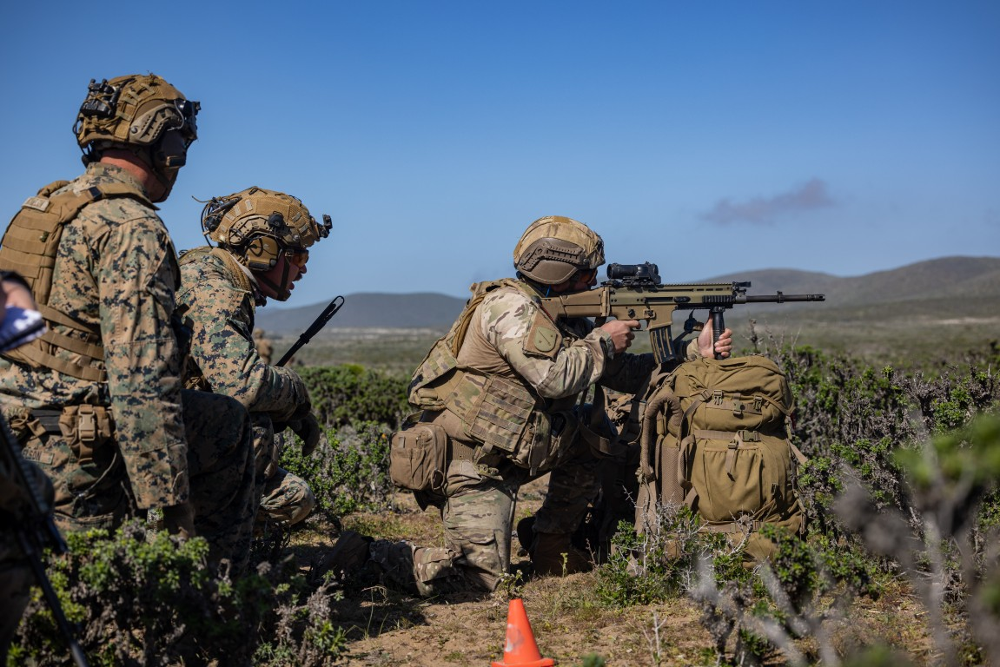
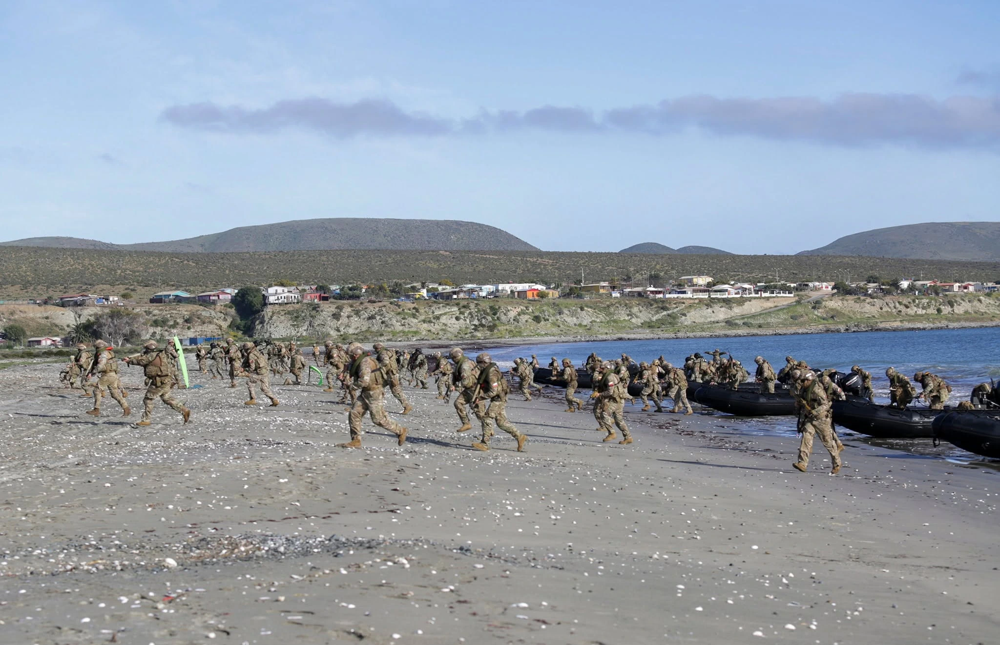

Seapower (Feb/Mar 2025) Feature
Reimagining the Monroe Doctrine Amid Great Power Competition

Although the 2018 U.S. National Defense Strategy marked a return to great power competition, adversaries like Russia, Iran and China have been quietly expanding influence in Latin America and the Caribbean for nearly three decades. These efforts challenge U.S. hegemony in a region vital to maintaining the Western- led geopolitical order, under attack by revisionist actors who reject human rights, free markets and a fundamental respect for the rule of law.
Presently, our adversaries are fueling tensions across key flashpoints: Russia's escalation in Ukraine, China's inevitable march toward war with Taiwan, Iran's escalating proxy war with Israel and Venezuela's recent claim over the Essequibo region. These crises create a complex web of geopolitical challenges that threaten global stability at a time when analysts have warned that the U.S. is not prepared for a multifront, multidomain war.
As experts like Niall Ferguson of Stanford and Harvard universities have cautioned, could we be sleepwalking into World War III? But this geopolitical contest is also a war of perception, in which disinformation and strategic influence erode U.S. credibility and gain footholds in critical regions. To win this asymmetric struggle, adversaries need only prove Washington and its international partners are unable or unwilling to respond to the threats at hand. A demonstration of strategic paralysis, especially in our own hemisphere, could optically signal the end of the unipolar moment. To counter this sustained encroachment, Washington must reimagine a 21st-century Monroe Doctrine to prevent the region from becoming a strategic base for hostile powers and to protect U.S. influence in an increasingly unstable world. This renewed vision must be built on cooperation, fostering strategic partnerships across Latin America to protect our common Western values of democracy, human rights and shared prosperity. In 2010, Sean Goforth, professor of history at the University of North Carolina Wilmington, coined the acronym VIRUS to describe a coalition of anti-Western actors (Venezuela, Iran, Russia) collaborating to expand their military and diplomatic influence in Latin America and the Caribbean, warning these nations seek to "bolster military capacity and extend diplomatic cooperation to magnify regional influence." With China now involved, this bloc has become a significant force multiplier, amplifying its reach and challenging U.S. interests more effectively than ever. Despite being overlooked by American media, former Argentinian President Alberto Fernández highlighted the region's insidious ties to our adversaries during a visit to Moscow just three weeks before Russia's full-scale invasion of Ukraine. On Feb. 3, 2022, standing beside Putin at the Kremlin, Fernández declared, "Argentina has to be Russia's gateway into Latin America."
Russia: Reviving Soviet Influence
Russia's involvement in Latin America, particularly with Venezuela, is rooted in arms sales and military partnerships. Since Hugo Chávez's rise to power in 1998, Moscow has supplied billions in advanced weaponry, including Su-30 fighter jets and missile systems. Venezuela's defense capabilities have also been bolstered with Russian Bal-E missile systems and the world's largest stockpile of man-portable air defense systems. Russia has further expanded its influence through joint naval exercises, notably in 2008, when it deployed vessels like Peter the Great alongside Venezuela's navy. Most recently, in June 2024, Russian warships and a nuclear submarine conducted exercises in Cuban waters. Additionally, Russia landed nuclear-capable Tu-160 bombers in Venezuela in 2018, further heightening tensions in the region and signaling its willingness to challenge U.S. dominance in its own hemisphere. Moscow's deepening partnership with Venezuela has intensified territorial tensions with Guyana over the Essequibo region, which could become a flashpoint. Russia's military presence also extends to Nicaragua, where it operates a GLONASS satellite station and maintains a sizeable troop presence. Elsewhere, Moscow has focused on arms deals with other Latin American nations, including helicopters and anti-tank missiles, as part of a broader strategy to challenge U.S. influence. The sustained waves of left-wing, autocratic governments in Latin America and the Caribbean offer Putin new opportunities to strengthen his foothold in the region. Although I will not fall into the trap of historicism, I can't help but remember the wisdom in Mark Twain's words when he reminded us that history does at times rhyme. For this reason, I believe it is imperative to remember it was the Kremlin's partnership with Fidel Castro in Cuba that brought the world to the brink of nuclear Armageddon in October 1962.
China: Economic Expansion, Strategic Control
China's influence in Latin America and the Caribbean has expanded beyond economic investments, positioning Beijing as a strategic competitor in a region critical to U.S. interests. Through its Belt and Road Initiative, China has secured access to vital resources and dual- use infrastructure in countries like Chile, Brazil and Argentina. While economic ties remain central, China has steadily increased its military presence through initiatives like the China-CELAC Forum, strengthening defense cooperation across the region. As of 2024, 21 Latin American nations have signed onto the Belt and Road Initiative, and China has free trade agreements with Chile, Costa Rica, Ecuador and Peru, further embedding its influence and challenging U.S. dominance in the hemisphere. China's military engagement in Latin America and the Caribbean has expanded significantly, encompassing professional military education programs, port visits and defense summits. Notably, Beijing now trains more Latin American military officers than the United States. According to a report from the Council on Foreign Relations, between 2006 and 2022, China exported an estimated $629 million in arms to Venezuela, while countries like Argentina, Bolivia, Ecuador and Peru have acquired Chinese military aircraft, ground vehicles, air defense systems and assault rifles. Cuba, too, has deepened its military cooperation with China, hosting the People's Liberation Army for port visits, while U.S. intelligence officials express growing concern over increased Chinese intelligence collaboration with Havana. China and Cuba are reportedly negotiating the construction of a joint military training facility that would allow for the permanent presence of Chinese troops on the island. This would add to Chinese-operated spy facilities that have allegedly existed in Cuba since at least 2019. Recent satellite images show expansion at eavesdropping stations linked to China, including new construction just 70 miles from the U.S. naval base at Guantanamo Bay. In a 2021 interview with Axios, Ivonne Baki, former Ecuadorian ambassador to Washington, warned the "U.S. is losing Latin America to China without putting up a fight." Her frustration underscored that without more attention, even “U.S.-friendly countries will conclude that we’re still just the backyard.”
Ultimately, what makes this asymmetric strategy particularly dangerous is these adversaries don’t need to win on the battlefield. The real threat lies in creating the perception of U.S. disengagement, which steadily erodes credibility and influence. As flashpoints emerge worldwide, this perception allows hostile powers to chip away at U.S. authority without ever engaging in direct confrontation.
Iran: Expanding Proxy Networks
Iran’s growing involvement in Latin America poses a significant threat to U.S. interests. Over the years, Tehran has embedded proxy networks, including Hezbollah and Quds forces, in Venezuela, using the region for arms smuggling and establishing terrorist training camps in collaboration with known iterations of terrorist groups like the Revolutionary Armed Forces of Colombia and the National Liberation Army. Hezbollah has been active in the region for decades, exemplified by the 1994 Jewish community center bombing in Buenos Aires, which killed 85 people and injured more than 300 others — the deadliest terrorist attack in Argentina’s history.
Iran has stationed military assets, including drones, in Nicolás Maduro’s Venezuela, just 1,200 miles from Miami. These drones reflect Tehran’s strategy to position military capabilities closer to U.S. borders, serving as a potential deterrent against U.S. actions in the Middle East. Although Iranian drones may pose a negligible risk to U.S. cities, in the war of perception, optics matter.
As stated by Iran’s Defense Minister Mohammad Reza Ashtiani last year, “Latin American countries are of special significance in Iran’s foreign and defense policy, based on the importance of the very sensitive South American region.”
A 21st-Century Monroe Doctrine
To reimagine the Monroe Doctrine for the 21st century, it is essential to grasp the deep historical connection between the United States and Latin America. Latin America has always been fundamentally Western. Viceroyalties like New Spain (now Mexico) once rivaled European powers in wealth and influence, serving not as colonies but as extensions of the Spanish realm itself. These regions were fully integrated into Spain’s political, economic and cultural framework, with universities, hospitals and libraries modeled after those in leading cities like Madrid and Seville.
This structure blurred the lines between the Spanish realm and its overseas territories, creating a unique culture born from the fusion of many great civilizations. Institutions like the National University of San Marcos, established in 1551 in Peru, mirrored European centers of learning and fostered intellectual exchanges across the Atlantic. As Leonard Liggio, former president of the Mont Pelerin Society, once noted, “Modern economics, human rights, and international law were founded in the Iberian universities of the 16th and 17th centuries.”
The Founding Fathers, too, drew inspiration from Spanish political thought, and Hispanic thinkers played a key intellectual role in the American Revolution. Recognizing this shared Western heritage, Washington must now revitalize its strategy by reimagining a cooperative, 21st-century Monroe Doctrine.
With this in mind, it is critical to understand that disengagement from Latin America has little precedent, both in terms of historical and security norms.
This modern approach should unite political and military partnerships with industrial collaboration, aligning with the National Defense Strategy by making military alliances the cornerstone. Expanding joint exercises, intelligence-sharing and security cooperation with key partners like Colombia, Brazil and Mexico — while incorporating new regional allies — will be essential to counter foreign influence and ensure hemispheric security.

The Pentagon should expand and modernize military exercises like UNITAS to include training focused on asymmetric threats and cyber defense. By incorporating such scenarios, these exercises can enhance the operational readiness of the U.S. and our regional partners. With China expanding its technological reach, enhancing cybersecurity partnerships is vital. A reimagined Monroe Doctrine must integrate a robust digital defense strategy, focusing on sharing intelligence to counter foreign technological vulnerabilities. Furthermore, expanding rotational U.S. military presence in countries like Colombia and Brazil — along with other key regional partners with critically strategic abandoned American bases — would not only deter adversarial activities but also signify a strong commitment to regional stability and collective security. The participation of U.S. forces in joint exercises with Colombian military units, such as Southern Vanguard, exemplifies the effectiveness of building capacity and interoperability. Recent wargames have exposed the U.S. defense industrial base’s struggle to meet production demands for critical military supplies, underscoring the need to tap into Latin America’s growing industrial capacity. Countries like Brazil, Mexico and Argentina offer valuable opportunities for nearshoring and co- production, reducing reliance on adversaries like China and bolstering supply chain resilience. By drawing from successful partnerships in the Indo- Pacific, the U.S. can replicate these collaborations in the Western Hemisphere to produce high-demand military equipment. With reports showing that nearshoring can generate upward of $78 billion in annual exports, the financial and strategic benefits of expanding our southern neighbors’ industrial capability become clear. As adversaries target U.S. industrial supply chains, it’s important to remember Marine Corps General James Mattis’s recent emphasis at the Hoover Institution: “Production is deterrence.”
Resetting the Strategic Chessboard
As we enter an era of great power conflict, the strategic chessboard must be reset to ensure our regional allies and partners are strategically placed to encircle and impose a tactical zugzwang on our adversaries as we lead them into an inevitable checkmate. Paul Morphy, a New Orleans native widely acknowledged as the world’s greatest 19th-century chess master, noted that to ensure victory, “it is essential to ‘help your pieces so they can help you.’” By strengthening political, military and industrial ties with Latin America, the U.S. can counter growing threats and reaffirm its commitment to democracy and regional stability — preventing flashpoints from escalating into broader conflicts as we enter an era of great power conflict. Aleksandr Solzhenitsyn, a Russian dissident writer and Nobel laureate who was a vocal critic of Soviet totalitarianism, warned in his 1978 Harvard commencement address, “A decline in courage may be the most striking feature which an outside observer notices in the West in our days.” His words remind us that while passivity has been allowed to fester, it is no longer an option. With the next great conflict looming, the U.S. cannot afford to wait. It must act decisively to secure the Western Hemisphere and safeguard our values-led international order.